2025
 |
DSCombiner: Double Shrinkage for Combining Biased and Unbiased Monte Carlo Renderings Chenxi Zhou, Keheng Xu, Mufan Guo, Xianhao Yu, Zhimin Fan, Guihuan Feng, Yanwen Guo, Jie Guo SIGGRAPH Asia 2025 |
 |
Spectral-GS: Taming 3D Gaussian Splatting with Spectral Entropy Letian Huang, Jie Guo, Jialin Dan, Ruoyu Fu, Yuanqi Li, Yanwen Guo SIGGRAPH Asia 2025 |
 |
Multiple Importance Reweighting for Path Guiding Zhimin Fan, Yiming Wang, Chenxi Zhou, Ling-Qi Yan, Yanwen Guo, Jie Guo ACM Transactions on Graphics (Proceedings of SIGGRAPH 2025) [Project Page] |
 |
Bernstein Bounds for Caustics Zhimin Fan, Chen Wang, Yiming Wang, Boxuan Li, Yuxuan Guo, Ling-Qi Yan, Yanwen Guo, Jie Guo ACM Transactions on Graphics (Proceedings of SIGGRAPH 2025) [Project Page] |
|
TransparentGS: Fast Inverse Rendering of Transparent Objects with Gaussians Letian Huang, Dongwei Ye, Jialin Dan, Chengzhi Tao, Huiwen Liu, Kun Zhou, Bo Ren, Yuanqi Li, Yanwen Guo, Jie Guo ACM Transactions on Graphics (Proceedings of SIGGRAPH 2025) [Project Page] |
 |
Appearance-aware Multi-view SVBRDF Reconstruction via Deep Reinforcement Learning Pengfei Zhu, Jie Guo, Yifan Liu, Qi Sun, Yanxiang Wang, Keheng Xu, Ligang Liu, Yanwen Guo SIGGRAPH 2025 |
 |
GlossyGS: Inverse Rendering of Glossy Objects with 3D Gaussian Splatting Shuichang Lai, Letian Huang, Jie Guo, Kai Cheng, Bowen Pan, Xiaoxiao Long, Jiangjing Lyu, Chengfei Lv, Yanwen Guo IEEE Transactions on Visualization and Computer Graphics, 2025 [Project Page] |
 |
Decoupled Motion Prediction for Real-time G-buffer Free Frame Extrapolation Jiawei Zhang, Haonan Zhang, Zhang Weitao, Liang Pu, Feng Zesen, Jie Guo ACM MM 2025 |
 |
Rea-time Neural Denoising with Render-aware Knowledge Distillation Mengxun Kong, Jie Guo, Chen Wang, Ye Yuan, Yanwen Guo AAAI 2025 [Project Page] |
 |
GaRe: Relightable 3D Gaussian Splatting for Outdoor Scenes from Unconstrained Photo Collections Haiyang Bai, Jiaqi Zhu, Songru Jiang, Wei Huang, Tao Lu, Yuanqi Li, Jie Guo, Runze Fu, Yanwen Guo, Lijun Chen ICCV 2025 [Project Page] |
 |
MixRF: Universal Mixed Radiance Fields with Points and Rays Aggregation Haiyang Bai, Tao Lu, Jiaqi Zhu, Wei Huang, Chang Gou, Jie Guo, Lijun Chen, Yanwen Guo IEEE Transactions on Visualization and Computer Graphics, 2025 |
 |
A Practical Real-time Hair Denoising and Antialiasing Approach Tao Huang, Junping Yuan, Ruike Hu, Lu Wang, Yanwen Guo, Bin Chen, Jie Guo, Junqiu Zhu Computer Graphics Forum (Proceedings of EGSR 2025) |
 |
World-Space Direct and Indirect Lighting Sample Reuse with Persistent Reservoirs Junping Yuan, Chen Wang, Qi Sun, Jie Guo, Jia Bei, Yan Zhuang, Yanwen Guo Pacific Graphics 2025 |
 |
360-GS: Layout-guided Panoramic Gaussian Splatting For Indoor Roaming Jiayang Bai, Letian Huang, Jie Guo, Wen Gong, Yuanqi Li, Yanwen Guo 3DV 2025 [Project Page] |
2024
 |
Specular Polynomials Zhimin Fan, Jie Guo, Yiming Wang, Tianyu Xiao, Hao Zhang, Chenxi Zhou, Zhenyu Chen, Pengpei Hong, Yanwen Guo, Ling-Qi Yan ACM Transactions on Graphics (Proceedings of SIGGRAPH 2024) [Project Page] |
 |
Conditional Mixture Path Guiding for Differentiable Rendering Zhimin Fan, Pengcheng Shi, Mufan Guo, Ruoyu Fu, Yanwen Guo, Jie Guo ACM Transactions on Graphics (Proceedings of SIGGRAPH 2024) [Project Page] |
 |
Deep Fourier-based Arbitrary-scale Super-resolution for Real-time Rendering Haonan Zhang, Jie Guo, Jiawei Zhang, Haoyu Qin, Zesen Feng, Ming Yang, Yanwen Guo ACM Transactions on Graphics (Proceedings of SIGGRAPH 2024) [Project Page] |
 |
GLPanoDepth: Global-to-Local Panoramic Depth Estimation Jiayang Bai, Haoyu Qin, Shuichang Lai, Jie Guo, Yanwen Guo IEEE Transactions on Image Processing, 2024 |
|
Practical Measurements of Translucent Materials with Inter-Pixel Translucency Prior Zhenyu Chen, Jie Guo, Shuichang Lai, Ruoyu Fu, Mengxun Kong, Chen Wang, Hongyu Sun, Zhebin Zhang, Chen Li, Yanwen Guo CVPR 2024 |
 |
On the Error Analysis of 3D Gaussian Splatting and an Optimal Projection Strategy Letian Huang, Jiayang Bai, Jie Guo, Yuanqi Li, Yanwen Guo ECCV 2024 [Project Page] |
 |
Biophysically-based Simulation of Sun-induced Skin Appearance Changes Xueyan He, Minghao Huang, Ruoyu Fu, Jie Guo, Junping Yuan, Yanghai Wang, Yanwen Guo Pacific Graphics 2024 |
 |
FASSET: Frame Supersampling and Extrapolation using Implicit Neural Representations of Rendering Contents Haoyu Qin, Haonan Zhang, Jie Guo, Ming Yang, Wenyang Bai, Yanwen Guo Computational Visual Media Conference (CVM 2024) |
2023
 |
MetaLayer: A Meta-learned BSDF Model for Layered Materials Jie Guo, Zeru Li, Xueyan He, Beibei Wang, Wenbin Li, Yanwen Guo, Ling-Qi Yan ACM Transactions on Graphics (Proceedings of SIGGRAPH Asia 2023) |
 |
Manifold Path Guiding for Importance Sampling Specular Chains Zhimin Fan, Pengpei Hong, Jie Guo, Changqing Zou, Yanwen Guo, Ling-Qi Yan ACM Transactions on Graphics (Proceedings of SIGGRAPH Asia 2023) [Project Page] |
 |
Ultra-High Resolution SVBRDF Recovery from a Single Image Jie Guo, Shuichang Lai, Qinghao Tu, Chengzhi Tao, Changqing Zou, Yanwen Guo ACM Transactions on Graphics, 2023 (presented at SIGGRAPH 2023) |
| 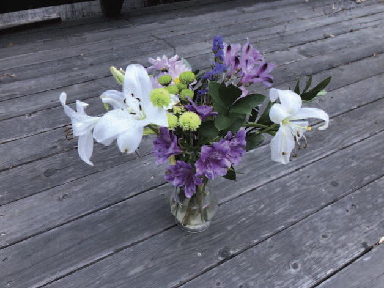 |
UHDNeRF: Ultra-High-Definition Neural Radiance Fields Quewei Li, Feichao Li, Jie Guo, Yanwen Guo ICCV 2023 |
| 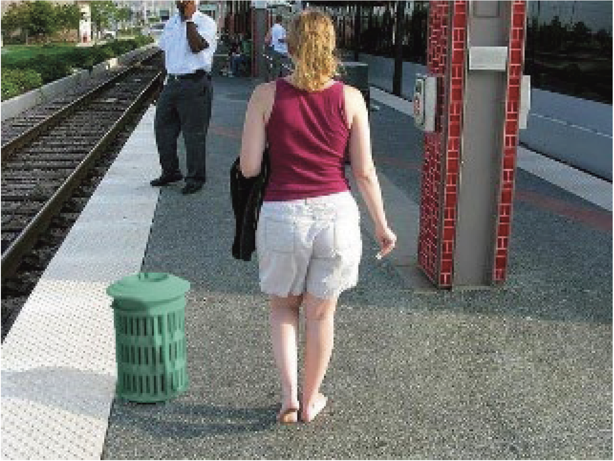 |
ShadowMover: Automatically Projecting Real Shadows onto Virtual Object Piaopiao Yu, Jie Guo, Fan Huang, Zhenyu Chen, Chen Wang, Yan Zhang, Yanwen Guo IEEE Transactions on Visualization and Computer Graphics (Proceedings of IEEE VR 2023) |
| 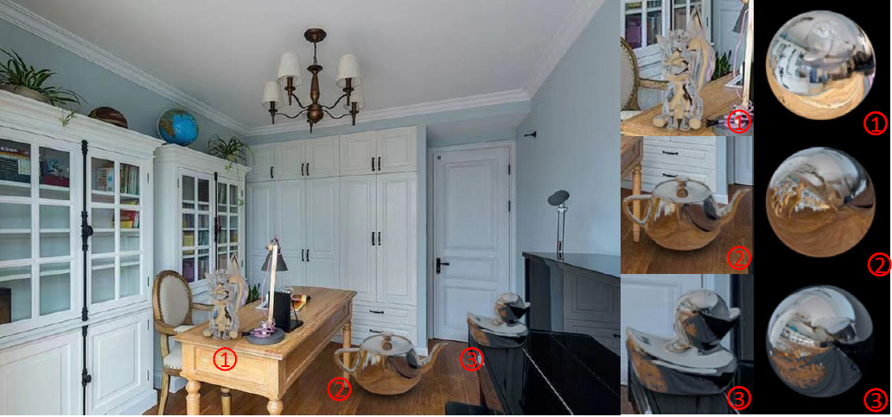 |
Local-to-Global Panorama Inpainting for Locale-Aware Indoor Lighting Prediction Jiayang Bai, Zhen He, Shan Yang, Jie Guo, Zhenyu Chen, Yan Zhang, Yanwen Guo IEEE Transactions on Visualization and Computer Graphics (Proceedings of IEEE ISMAR 2023) |
| 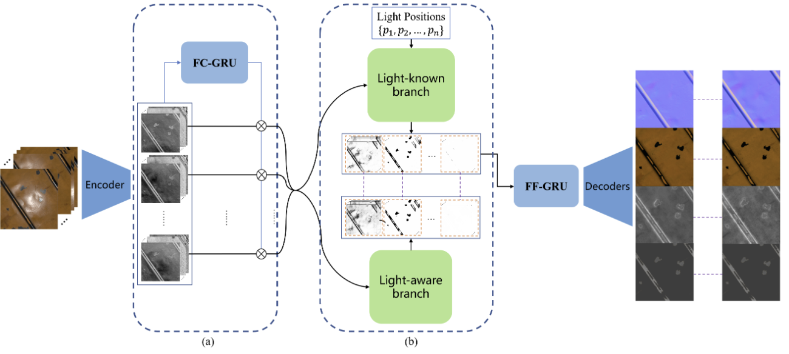 |
SVBRDF Reconstruction by Transferring Lighting Knowledge Pengfei Zhu, Shuichang Lai, Mufan Chen, Jie Guo, Yifan Liu, Yanwen Guo Computer Graphics Forum (Proceedings of Pacific Graphics 2023) |
2022
| 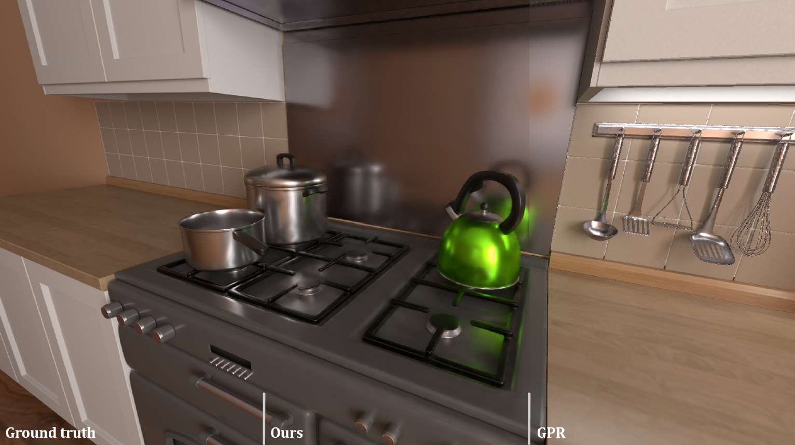 |
Efficient Light Probes for Real-time Global Illumination Jie Guo, Zijing Zong, Yadong Song, Xihao Fu, Chengzhi Tao, Yanwen Guo, Ling-Qi Yan ACM Transactions on Graphics (Proceedings of SIGGRAPH Asia 2022) |
| 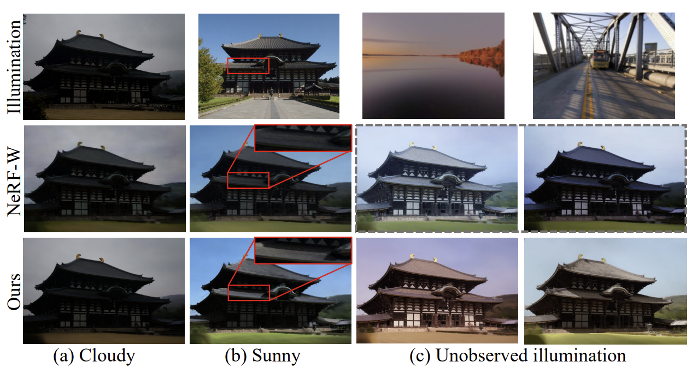 |
NeuLighting: Neural Lighting for Free Viewpoint Outdoor Scene Relighting with Unconstrained Photo Collections Quewei Li, Jie Guo, Yang Fei, Feichao Li, Yanwen Guo SIGGRAPH Asia 2022 |
| 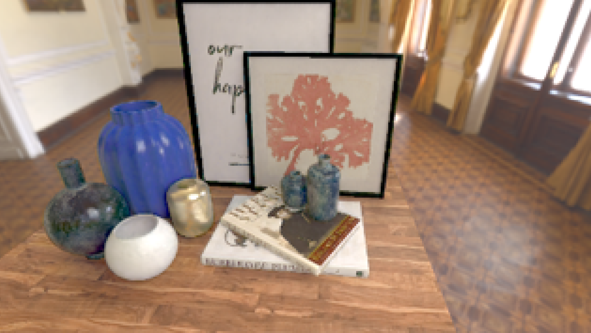 |
Real-time Deep Radiance Reconstruction from Imperfect Caches Tao Huang, Yadong Song, Jie Guo, Chengzhi Tao, Zijing Zong, Xihao Fu, Hongshan Li, Yanwen Guo Computer Graphics Forum (Proceedings of Pacific Graphics 2022) |
2021
| 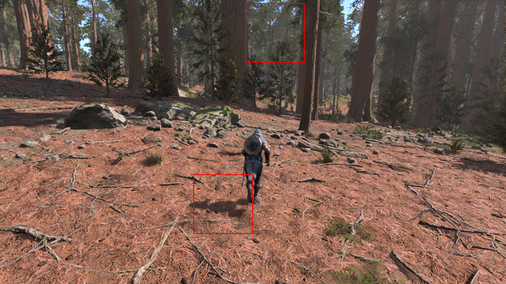 |
ExtraNet: Real-time Extrapolated Rendering for Low-latency Temporal Supersampling Jie Guo, Xihao Fu, Liqiang Lin, Hengjun Ma, Yanwen Guo, Shiqiu Liu, Ling-Qi Yan ACM Transactions on Graphics (Proceedings of SIGGRAPH Asia 2021) [Code] |
| 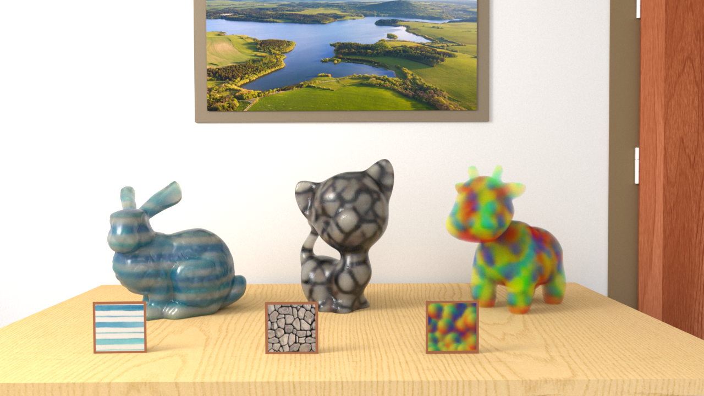 |
Volumetric Appearance Stylization with Stylizing Kernel Prediction Network Jie Guo, Mengtian Li, Zijing Zong, Yuntao Liu, Jingwu He, Yanwen Guo, Ling-Qi Yan ACM Transactions on Graphics (Proceedings of SIGGRAPH 2021) |
| 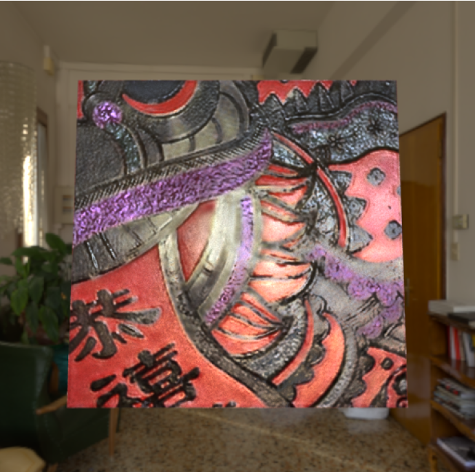 |
Highlight-Aware Two-Stream Network for Single-Image SVBRDF Acquisition Jie Guo, Shuichang Lai, Chengzhi Tao, Yuelong Cai, Lei Wang, Yanwen Guo, Ling-Qi Yan ACM Transactions on Graphics (Proceedings of SIGGRAPH 2021) |
| 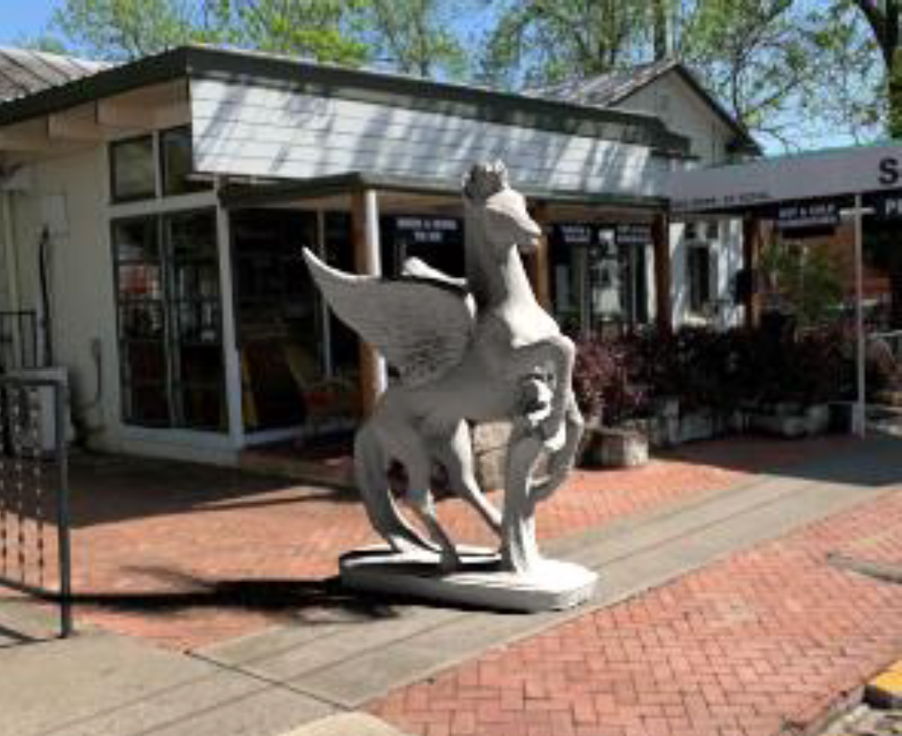 |
Hierarchical Disentangled Representation Learning for Outdoor Illumination Estimation and Editing Piaopiao Yu, Jie Guo, Fan Huang, Cheng Zhou, Hongwei Che, Xiao Ling, Yanwen Guo ICCV 2021 |
| 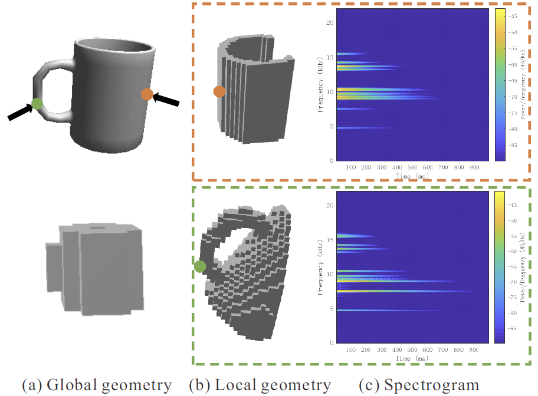 |
GLAVNet: Global-Local Audio-Visual Cues for Fine-Grained Material Recognition Fengmin Shi, Jie Guo, Haonan Zhang, Shan Yang, Xiying Wang, Yanwen Guo CVPR 2021 |
2020
| 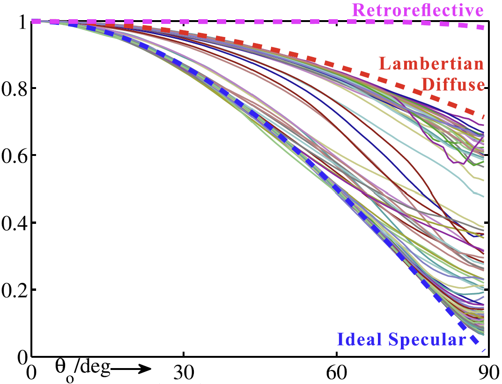 |
BRDF Analysis with Directional Statistics and Its Applications Jie Guo, Yanwen Guo, Jingui Pan, and Wenzhou Lu IEEE Transactions on Visualization and Computer Graphics, 2020 |
|
DeepBRDF: A Deep Representation for Manipulating Measured BRDF Bingyang Hu, Jie Guo, Yanjun Chen, Mengtian Li, Yanwen Guo Computer Graphics Forum (Proceedings of Eurographics 2020) |
2019
 |
GradNet: Unsupervised Deep Screened Poisson Reconstruction for Gradient-Domain Rendering Jie Guo, Mengtian Li, Quewei Li, Yuting Qiang, Bingyang Hu, Yanwen Guo, Ling-Qi Yan ACM Transactions on Graphics (Proceedings of SIGGRAPH Asia 2019) |
| 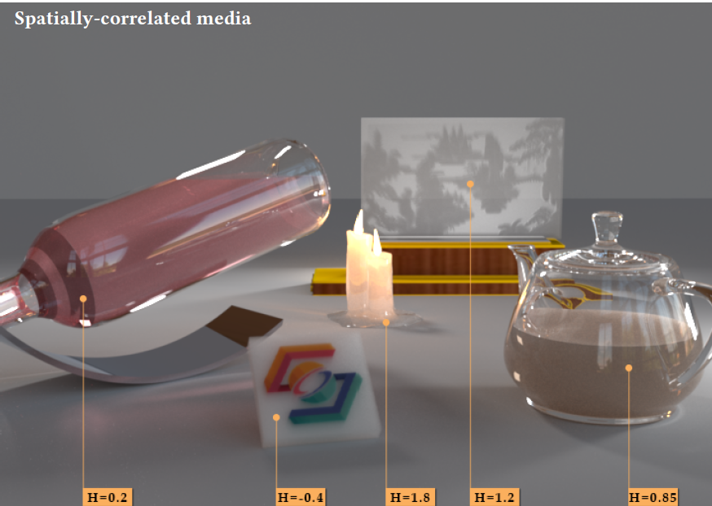 |
Fractional Gaussian Fields for Modeling and Rendering of Spatially-Correlated Media Jie Guo, Yanjun Chen, Bingyang Hu, Ling-Qi Yan, Yanwen Guo, Yuntao Liu ACM Transactions on Graphics (Proceedings of SIGGRAPH 2019) |
 |
Deep Spherical Gaussian Illumination Estimation for Indoor Scene Mengtian Li, Jie Guo, Xiufen Cui, Rui Pan, Yanwen Guo, Chenchen Wang, Piaopiao Yu, Fei Pan ACM Multimedia Asia 2019 |
Before 2019
 |
Single Image Highlight Removal with a Sparse and Low-Rank Reflection Model Jie Guo, Zuojian Zhou, Limin Wang ECCV 2018 |
 |
A Physically-based Appearance Model for Special Effect Pigments Jie Guo, Yanjun Chen, Yanwen Guo, Jingui Pan Computer Graphics Forum (Proceedings of EGSR 2018) |
 |
A retroreflective BRDF model based on prismatic sheeting and microfacet theory Jie Guo, Yanwen Guo, Jingui Pan Graphical Models, 2018 |
| 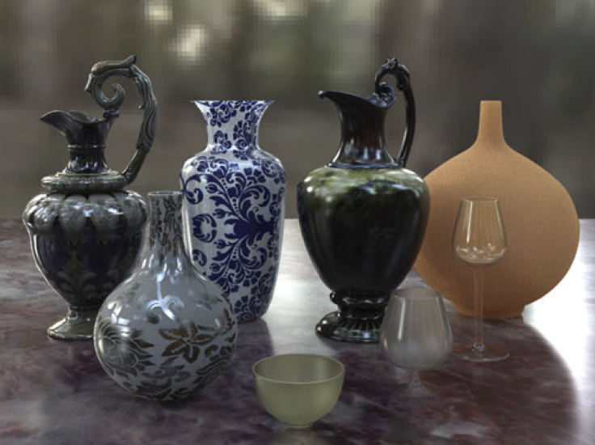 |
Rendering Thin Transparent Layers with Extended Normal Distribution Functions Jie Guo, Jinghui Qian, Yanwen Guo, Jingui Pan IEEE Transactions on Visualization and Computer Graphics, 2017 |
 |
Real-time rendering of refracting transmissive objects with multi-scale rough surfaces Jie Guo, Jingui Pan The Visual Computer, 2016 |
 |
Practical Rendering of Thin Layered Materials with Extended Microfacet Normal Distributions Jie Guo, Jinghui Qian, Jingui Pan EGSR 2015 |
 |
Real-time simulating and rendering of layered dust Jie Guo, Jingui Pan The Visual Computer (Proceedings of CGI 2014) |
 |
Real-time Multi-scale Refraction under All-frequency Environmental Lighting Jie Guo, Jingui Pan CAD/Graphics 2013 |
 |
Line Segment Sampling with Blue-Noise Properties Xin Sun, Kun Zhou, Jie Guo, Guofu Xie, Jingui Pan, Wencheng Wang, Baining Guo ACM Transactions on Graphics (Proceedings of SIGGRAPH 2013) |